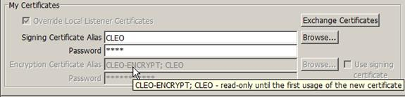

| Certificate Management / Exchanging Certificates with Your Trading Partner | |
Since the partner may not always begin using the newly-accepted certificate immediately, messages received by the trading partner may be decrypted with either the old certificate (CLEO-ENCRYPT) or the newly accepted certificate (CLEO). Once an encrypted message is received from the trading partner using the new certificate (referred to as “first-usage”), it will automatically be installed as the active certificate in the panel.
